Nuclear spin may be related to the nucleon composition of a nucleus in the following manner: Odd mass nuclei (i.e. those having an odd number of nucleons) have fractional spins. Examples are I = 1/2 ( 1H, 13C, 19F ), I = 3/2 ( 11B ) & I = 5/2 ( 17O ). Even mass nuclei composed of odd numbers of protons and neutrons have integral spins. Examples are I = 1 ( 2H, 14N ). Even mass nuclei composed of even numbers of protons and neutrons have zero spin ( I = 0 ). Examples are 12C, and 16O. Spin 1/2 nuclei have a spherical charge distribution, and their nmr behavior is the easiest to understand. Other spin nuclei have nonspherical charge distributions and may be analyzed as prolate or oblate spinning bodies. All nuclei with non-zero spins have magnetic moments (μ), but the nonspherical nuclei also have an electric quadrupole moment (eQ). Some characteristic properties of selected nuclei are given in the following table.
Isotope
Natural %Abundance
Spin (I)
MagneticMoment (μ)*
MagnetogyricRatio (γ)†
1H
2H
11B
13C
17O
19F
29Si
31P
* μ in units of nuclear magnetons = 5.05078•10-27 JT-1 † γ in units of 107rad T-1 sec-1
This page is the property of The Edvibe Team. Comments, questions and errors should be sent to contact@edvibe.co.ke. These pages are provided to the IOCD to assist in capacity building in chemical education. 05/05/2013
The model of a spinning nuclear magnet aligned with or against an external magnetic field (for I = 1/2 nuclei) must be refined for effective interpretation of nmr phenomena. Just as a spinning mass will precess in a gravitational field (a gyroscope), the magnetic moment μ associated with a spinning spherical charge will precess in an external magnetic field. In the following illustration, the spinning nucleus has been placed at the origin of a cartesian coordinate system, and the external field is oriented along the z-axis. The frequency of precession is proportional to the strength of the magnetic field, as noted by the equation: ωo = γBo. The frequency ωo is called the Larmor frequency and has units of radians per second. The proportionality constant γ is known as the gyromagnetic ratio and is proportional to the magnetic moment (γ = 2pm/hI). Some characteristic γ's were listed in a preceding table of nuclear properties.
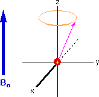
A Spinning Gyroscopein a Gravity Field
A Spinning Chargein a Magnetic Field
If rf energy having a frequency matching the Larmor frequency is introduced at a right angle to the external field (e.g. along the x-axis), the precessing nucleus will absorb energy and the magnetic moment will flip to its I = _1/2 state. This excitation is shown in the following diagram. Note that frequencies in radians per second may be converted to Hz (cps) by dividing by 2π.
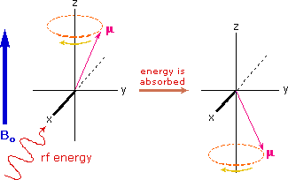
The energy difference between nuclear spin states is small compared with the average kinetic energy of room temperature samples, and the +1/2 and _1/2 states are nearly equally populated. Indeed, in a field of 2.34 T the excess population of the lower energy state is only six nuclei per million. Although this is a very small difference , when we consider the number of atoms in a practical sample (remember the size of Avogadro's number), the numerical excess in the lower energy state is sufficient for selective and sensitive spectroscopic measurements. The diagram on the left below illustrates the macroscopic magnetization of a sample containing large numbers of spin 1/2 nuclei at equilibrium in a strong external magnetic field (Bo). A slight excess of +1/2 spin states precess randomly in alignment with the external field and a smaller population of _1/2 spin states precess randomly in an opposite alignment. An overall net magnetization therefore lies along the z-axis.
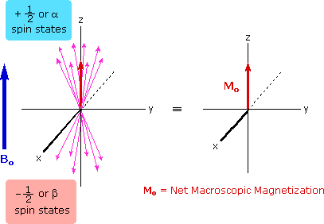
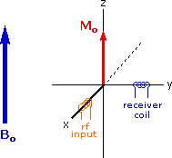
Net Macroscopic Magnetization of a Sample in an External Magnetic Field Bo
Excitation by RF Energy and Subsequent Relaxation
The diagram and animation on the right show the changes in net macroscopic magnetization that occur as energy is introduced by rf irradiation at right angles to the external field. It is convenient to show the rf transmitter on the x-axis and the receiver-detector coil on the y-axis. On clicking the "Introduce RF Energy" button the animation will begin, and will repeat five times.
• First, the net magnetization shifts away from the z-axis and toward the y-axis. This occurs because some of the +1/2 nuclei are excited to the _1/2 state, and the precession about the z-axis becomes coherent (non-random), generating a significant y component to the net magnetization (M). The animation pauses at this stage. • After irradiation the nuclear spins return to equilibrium in a process called relaxation. As the xy coherence disappears and the population of the +1/2 state increases, energy is released and detected by the receiver. The net magnetization spirals back, and eventually the equilibrium state is reestablished.
An inherent problem of the nmr experiment must be pointed out here. We have noted that the population difference between the spin states is proportionally very small. A fundamental requirement for absorption spectroscopy is a population imbalance between a lower energy ground state and a higher energy excited state. This can be expressed by the following equation, where A is a proportionality constant. If the mole fractions of the spin states are equal (η+ = η- ) then the population difference is zero and no absorption will occur. If the rf energy used in an nmr experiment is too high this saturation of the higher spin state will result and useful signals will disappear.
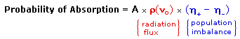
For nmr spectroscopy to be practical, an efficient mechanism for nuclei in the higher energy _1/2 spin state to return to the lower energy +1/2 state must exist. In other words, the spin population imbalance existing at equilibrium must be restored if spectroscopic observations are to continue. Now an isolated spinning nucleus will not spontaneously change its spin state in the absence of external perturbation. Indeed, hydrogen gas (H2) exists as two stable spin isomers: ortho (parallel proton spins) and para (antiparallel spins). Nmr spectroscopy is normally carried out in a liquid phase (solution or neat) so that there is close contact of sample molecules with a rapidly shifting crowd of other molecules (Brownian motion). This thermal motion of atoms and molecules generates local fluctuating electromagnetic fields, having components that match the Larmor frequency of the nucleus being studied. These local fields stimulate emission/absorption events that establish spin equilibrium, the excess spin energy being detected as it is released. This relaxation mechanism is called Spin-Lattice Relaxation (or Longitudinal Relaxation). The efficiency of spin-lattice relaxation depends on factors that influence molecular movement in the lattice, such as viscosity and temperature. The relaxation process is kinetically first order, and the reciprocal of the rate constant is a characteristic variable designated T1, the spin-lattice relaxation time. In non-viscous liquids at room temperature T1 ranges from 0.1 to20 sec. A larger T1 indicates a slower or more inefficient spin relaxation. Another relaxation mechanism called spin-spin relaxation (or transverse relaxation) is characterized by a relaxation time T2. This process, which is actually a spin exchange, will not be discussed here.
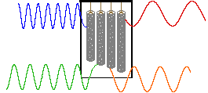
In a given strong external magnetic field, each structurally distinct set of hydrogens in a molecule has a characteristic resonance frequency, just as each tubular chime in percussion instrument has a characteristic frequency. The drawing on the right depicts a set of four chimes, with the frequency of each designated by a colored sine wave. To discover the frequency of a chime we can strike it with a mallet and measure the sound emitted. This procedure can be repeated for each chime in the group so that all the characteristic frequencies are identified. The button beneath the drawing activates an animation showing this for one chime. Clicking on the illustration returns the original drawing. An alternative means of acquiring the same information is to strike all the chimes simultaneously, and to subject the complex collection of frequencies produced to mathematical analysis. In the following diagram the four frequencies assigned to our set of chimes are added together to give a complex summation wave. This is a straightforward conversion; and the reverse transformation, while not as simple, is readily accomplished, provided the combination signal is adequately examined and characterized..
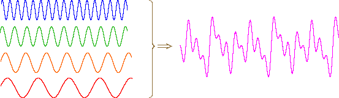
A CW nmr spectrometer functions by irradiating each set of distinct nuclei in turn, a process analagous to striking each chime independently. For a high resolution spectrum this must be done slowly, and a 12 ppm sweep of the proton region takes from 5 to 10 minutes. It has proven much more efficient to excite all the proton nuclei in a molecule at the same time, followed by mathematical analysis of the complex rf resonance frequencies emitted as they relax back to the equilibrium state. This is the principle on which a pulse Fourier transform spectrometer operates. By exposing the sample to a very short (10 to 100 μsec), relatively strong (about 10,000 times that used for a CW spectrometer) burst of rf energy along the x-axis, as described above, all of the protons in the sample are excited simultaneously. The macroscopic magnetization model remains useful if we recognize it is a combination of magnetization vectors for all the nuclei that have been excited.
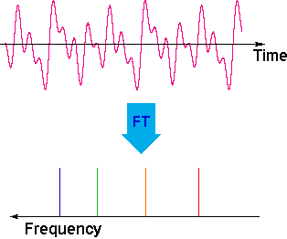
The overlapping resonance signals generated as the excited protons relax are collected by a computer and subjected to a Fourier transform mathematical analysis. As shown in the diagram on the left, the Fourier transform analysis, abbreviated FT, converts the complex time domain signal emitted by the sample into the frequency (or field) domain spectrum we are accustomed to seeing. In this fashion a complete spectrum can be acquired in a few seconds. Because the relaxation mechanism is a first order process, the rf signal emitted by the sample decays exponentially. This is called a free induction decay signal, abbreviated FID. An example of a FID signal may be seen by .
Since, the FID signal collected after one pulse, may be stored and averaged with the FID's from many other identical pulses prior to the Fourier transform, the nmr signal strength from a small sample may be enhanced to provide a useable spectrum. This has been essential to acquiring spectra from low abundance isotopes, such as 13C. In practice, the pulse FT experiment has proven so versatile that many variations of the technique, suited to special purposes, have been devised and used effectively.
The compound on the left has a chain of ten methylene groups linking para carbons of a benzene ring. Such bridged benzenes are called paracyclophanes. The meta analogs are also known. The structural constraints of the bridging chain require the middle two methylene groups to lie over the face of the benzene ring, which is a nmr shielding region. The four hydrogen atoms that are part of these groups display resonance signals that are more than two ppm higher field than the two methylene groups bonded to the edge of the ring (a deshielding region).
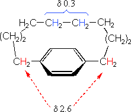
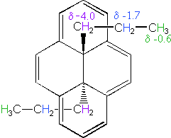
The 14 π-electron bridged annulene on the right is an aromatic (4n + 2) system, and has the same anisotropy as benzene. Nuclei located over the face of the ring are shielded, and those on the periphery are deshielded. The ring hydrogens give resonance signals in the range 8.0 to 8.7 δ, as expected from their deshielded location (note that there are three structurally different hydrogens on the ring). The two propyl groups are structurally equivalent (homotopic), and are free to rotate over the faces of the ring system (one above and one below). On average all the propyl hydrogens are shielded, with the innermost methylene being the most affected. The negative chemical shifts noted here indicate that the resonances occurs at a higher field than the TMS reference signal. A remarkable characteristic of annulenes is that antiaromatic 4n π-electron systems are anisotropic in the opposite sense as their aromatic counterparts. A dramatic illustration of this fact is provided by the dianion derivative of the above bridged annulene. This dianion, formed by the addition of two electrons, is a 16 π-electron (4n) system. In the nmr spectrum of the dianion, the ring hydrogens resonate at high field (they are shielded), and the hydrogens of the propyl group are all shifted downfield (deshielded). The innermost methylene protons (magenta) give an nmr signal at +22.2 ppm, and the signals from the adjacent methylene and methyl hydrogens also have unexpectedly large chemical shifts. By clicking on the above structure the dianion data will appear.
Compounds in which two or more benzene rings are fused together were described in an earlier section. Examples such as naphthalene, anthracene and phenanthrene, shown in the following diagram, present interesting insights into aromaticity and reactivity. The resonance stabilization of these compounds, calculated from heats of hydrogenation or combustion, is given beneath each structure.
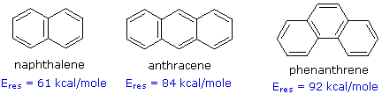
Unlike benzene, the structures of these compounds show measurable double bond localization, which is reflected in their increased reactivity both in substitution and addition reactions. However, the 1Hnmr spectra of these aromatic hydrocarbons do not provide much insight into the distribution of their pi-electrons. As expected, naphthalene displays two equally intense signals at δ 7.46 & 7.83 ppm. Likewise, anthracene shows three signals, two equal intensity multiplets at δ 7.44 & 7.98 ppm and a signal half as intense at δ 8.4 ppm. Thus, the influence of double bond localization or competition between benzene and higher annulene stabilization cannot be discerned.
The much larger C48H24 fused benzene ring cycle, named "kekulene" by Heinz Staab and sometimes called "superbenzene" by others, serves to probe the relative importance of benzenoid versus annulenoid aromaticity. A generic structure of this remarkable compound is drawn on the left below, together with two representative Kekule contributing structures on its right. There are some 200 Kekule structures that can be drawn for kekulene, but these two canonical forms represent extremes in aromaticity. The central formula has two [4n+2] annulenes, an inner [18]annulene and an outer [30]annulene (colored pink and blue respectively). The formula on the right has six benzene rings (colored green) joined in a ring by meta bonds, and held in a planar configuration by six cis-double bond bridges.
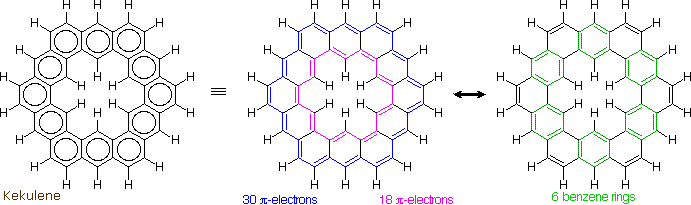
The coupled annulene contributor in the center has an energetically equivalent canonical form in which the single and double bonds making up the annulenes are exchanged. If these contributors dominate the aromatic character of kekulene, the 6 inside hydrogens should be shielded by the ring currents, and the 18 hydrogens on the periphery should be deshielded. Furthermore, the C:C bonds composing each annulene ring should have roughly equal lengths. If the benzene contributor on the right (and its equivalent Kekule form) dominate the aromaticity of kekulene, all the benzene hydrogens will be deshielded, and the six double bond links on the periphery will have bond lengths characteristic of fixed single and double bonds
The extreme insolubility of kekulene made it difficult to grow suitable crystals for X-ray analysis or obtain solution nmr spectra. These problems were eventually solved by using high boiling solvents, the 1Hnmr spectrum being taken at 150 to 200° C in deuterated tetrachlorobenzene solution. The experimental evidence demonstrates clearly that the hexa-benzene ring structure on the right most accurately represents kekulene. This evidence will be shown above by clicking on the diagram. The extremely low field resonance of the inside hydrogens is assigned from similar downfield shifts in model compounds.
It is important to understand that the shielding and deshielding terms used throughout our discussion of relative chemical shifts are themselves relative. Indeed, compared to a hypothetical isolated proton, all the protons in a covalent compound are shielded by the electrons in nearby sigma and pi-bonds. Consequently, it would be more accurate to describe chemical shift differences in terms of the absolute shielding experienced by different groups of hydrogens. There is, in fact, good evidence that the anisotropy of neighboring C-H and C-C sigma bonds, together with that of the bond to the observed hydrogen, are the dominate shielding factors influencing chemical shifts. The anisotropy of pi-electron systems augments this sigma skeletal shielding. Nevertheless, the deceptive focus on anisotropic pi-electron influences is so widely and commonly used that this view has been retained and employed in these pages.
Hydrogen bonding of hydroxyl and amino groups not only causes large variations in the chemical shift of the proton of the hydrogen bond, but also influences its coupling with adjacent C-H groups. As shown on the right, the 60 MHz proton nmr spectrum of pure (neat) methanol exhibits two signals, as expected. At 30° C these signals are sharp singlets located at δ 3.35 and 4.80 ppm, the higher-field methyl signal (magenta) being three times as strong as the OH signal (orange) at lower field. When cooled to -45 ° C, the larger higher-field signal changes to a doublet (J = 5.2 Hz) having the same chemical shift. The smaller signal moves downfield to δ 5.5 ppm and splits into a quartet (J = 5.2 Hz). The relative intensities of the two groups of signals remains unchanged. This interesting change in the nmr spectrum, which will be illustrated by clicking the "Cool the Sample" button, is due to increased stability of hydrogen bonded species at lower temperature. Since hydrogen bonding not only causes a resonance shift to lower field, but also decreases the rate of intermolecular proton exchange, the hydroxyl proton remains bonded to the alkoxy group for a sufficient time to exert its spin coupling influence.Under routine conditions, rapid intermolecular exchange of the OH protons of alcohols often prevents their coupling with adjacent hydrogens from being observed. Intermediate rates of proton exchange lead to a broadening of the OH and coupled hydrogen signals, a characteristic that is useful in identifying these functions. Since traces of acid or base catalyze this hydrogen exchange, pure compounds and clean sample tubes must be used for experiments of the kind described here.
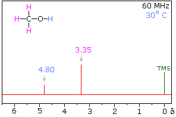
Another way of increasing the concentration of hydrogen bonded methanol species is to change the solvent from chloroform-d to a solvent that is a stronger hydrogen bond acceptor. Examples of such solvents are given in the following table. In contrast to the neat methanol experiment described above, very dilute solutions are used for this study. Since chloroform is a poor hydrogen bond acceptor and the dilute solution reduces the concentration of methanol clusters, the hydroxyl proton of methanol generates a resonance signal at a much higher field than that observed for the pure alcohol. Indeed, the OH resonance signal from simple alcohols in dilute chloroform solution is normally found near δ 1.0 ppm. The exceptionally strong hydrogen bond acceptor quality of DMSO is demonstrated here by the large downfield shift of the methanol hydroxyl proton, compared with a slight upfield shift of the methyl signal. The expected spin coupling patterns shown above are also observed in this solvent. Although acetone and acetonitrile are better hydrogen-bond acceptors than chloroform, they are not as effective as DMSO.
The solvent effect shown above suggests a useful diagnostic procedure for characterizing the OH resonance signals from alcohol samples. For example, a solution of ethanol in chloroform-d displays the spectrum shown on the left below, especially if traces of HCl are present (otherwise broadening of the OH and CH2 signals occurs). Note that the chemical shift of the OH signal (red) is less than that of the methylene group (blue), and no coupling of the OH proton is apparent. The vicinal coupling (J = 7 Hz) of the methyl and methylene hydrogens is typical of ethyl groups. In DMSO-d6 solution small changes of chemical shift are seen for the methyl and methylene group hydrogens, but a dramatic downfield shift of the hydroxyl signal takes place because of hydrogen bonding. Coupling of the OH proton to the adjacent methylene group is evident, and both the coupling constants can be measured. Because the coupling constants are different, the methylene signal pattern is an overlapping doublet of quartets (eight distinct lines) rather than a quintet. Note that residual hydrogens in the solvent give a small broad signal near δ 2.5 ppm.
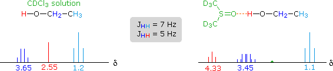
For many alcohols in dilute chloroform-d solution, the hydroxyl resonance signal is often broad and obscured by other signals in the δ 1.5 to 3.0 region. The simple technique of using DMSO-d6 as a solvent, not only shifts this signal to a lower field, but permits 1°-, 2 °- & 3 °-alcohols to be distinguished. Thus, the hydroxyl proton of 2-propanol generates a doublet at δ 4.35 ppm, and the corresponding signal from 2-methyl-2-propanol is a singlet at δ 4.2 ppm. The more acidic OH protons of phenols are similarly shifted – from δ 4 to 7 in chloroform-d to δ 8.5 to 9.5 in DMSO-d6.
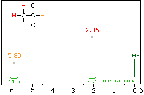
The spin-spin interaction of neighboring hydrogens takes place through the covalent bonds that join them. The most common bonding relationship is vicinal (joined by three sigma bonds). In this case a neighboring proton having a +1/2 spin shifts the resonance frequency of the proton being observed to a slightly higher value (up to 7 Hz), and a _1/2 neighboring spin shifts it to a lower frequency. Remember that the total population of these two spin states is roughly equal, differing by only a few parts per million in a strong magnetic field. If several neighboring spins are present, their effect is additive. In the spectrum of 1,1-dichloroethane shown on the right, it is clear that the three methyl hydrogens (red) are coupled with the single methyne hydrogen (orange) in a manner that causes the former to appear as a doublet and the latter as a quartet. The light gray arrow points to the unperturbed chemical shift location for each proton set. By clicking on one of these signals, the spin relationship that leads to the coupling pattern will be displayed. Clicking elsewhere in the picture will return the original spectrum. The statistical distribution of spins within each set explains both the n+1 rule and the relative intensities of the lines within a splitting pattern. The action of a single neighboring proton is easily deduced from the fact that it must have one of two possible spins. Interaction of these two spin states with the nuclei under observation leads to a doublet located at the expected chemical shift. The corresponding action of the three protons of the methyl group requires a more detailed analysis. In the display of this interaction four possible arrays of their spins are shown. The mixed spin states are three times as possible as the all +1/2 or all _1/2 collection. Consequently, we expect four signals, two above the chemical shift and two below it. This spin analysis also suggests that the intensity ratio of these signals will be 1:3:3:1. The line separations in splitting patterns are measured in Hz, and are characteristic of the efficiency of the spin interaction; they are referred to as coupling constants (symbol J). In the above example, the common coupling constant is 6.0 Hz.
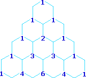
A simple way of estimating the relative intensities of the lines in a first-order coupling pattern is shown on the right. This array of numbers is known as Pascal's triangle, and is easily extended to predict higher multiplicities. The number appearing at any given site is the sum of the numbers linked to it from above by the light blue lines. Thus, the central number of the five quintet values is 3 + 3 = 6. Of course, a complete analysis of the spin distributions, as shown for the case of 1,1-dichloroethane above, leads to the same relative intensities.
Coupling constants are independent of the external magnetic field, and reflect the unique spin interaction characteristics of coupled sets of nuclei in a specific structure. As noted earlier, coupling constants may vary from a fraction of a Hz to nearly 20 Hz, important factors being the nature and spatial orientation of the bonds joining the coupled nuclei. In simple, freely rotating alkane units such as CH3CH2X or YCH2CH2X the coupling constant reflects an average of all significant conformers, and usually lies in a range of 6 to 8 Hz. This conformational mobility may be restricted by incorporating the carbon atoms in a rigid ring, and in this way the influence of the dihedral orientation of the coupled hydrogens may be studied.
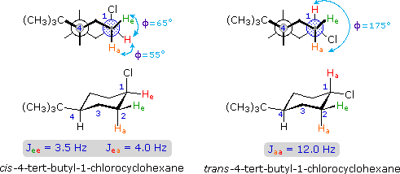
The structures of cis and trans-4-tert-butyl-1-chlorocyclohexane, shown above, illustrate how the coupling constant changes with the dihedral angle (φ) between coupled hydrogens. The inductive effect of chlorine shifts the resonance frequency of the red colored hydrogen to a lower field (δ ca. 4.0), allowing it to be studied apart from the other hydrogens in the molecule. The preferred equatorial orientation of the large tert-butyl group holds the six-membered ring in the chair conformation depicted in the drawing. In the trans isomer this fixes the red hydrogen in an axial orientation; whereas for the cis isomer it is equatorial. The listed values for the dihedral angles and the corresponding coupling constants suggest a relationship, which has been confirmed and clarified by numerous experiments. This relationship is expressed by the Karplus equation shown below.
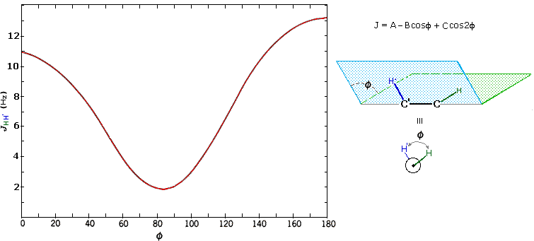
Geminal couplings are most commonly observed in cyclic structures, but are also evident when methylene groups have diastereomeric hydrogens. An example illustrating geminal couplings is shown elsewhere.
We have noted that rapidly exchanging hydroxyl hydrogens are not spin-coupled to adjacent C-H groups. The reason for this should be clear. As each exchange occurs, there will be an equal chance of the new proton having a +1/2 or a _1/2 spin (remember that the overall populations of the two spin states are nearly identical). Over time, therefore, the hydroxyl hydrogen behaves as though it is rapidly changing its spin, and the adjacent nuclei see only a zero spin average from it. If we could cause other protons in a molecule to undergo a similar spin averaging, their spin-coupling influence on adjacent nuclei would cease. Such nmr experiments are possible, and are called spin decoupling. When a given set of nuclei is irradiated with strong rf energy at its characteristic Larmor frequency, spin saturation and rapid interconversion of the spin states occurs. Neighboring nuclei with different Larmor frequencies are no longer influenced by specific long-lived spins, so spin-spin signal splitting of the neighbors vanishes. The following spectrum of 1-nitropropane may be used to illustrate this technique. The three distinct sets of hydrogens in this molecule generate three resonance signals (two triplets and a broad sextet). A carefully tuned decoupling signal may be broadcast into the sample while the remaining spectrum is scanned. The region of the decoupling signal is obscured, but resonance signals more than 60 Hz away may still be seen. By clicking on one of the three signals in the spectrum, the results of decoupling at that frequency will be displayed.
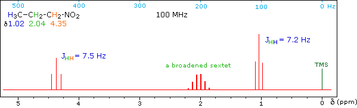
In this example, the nuclei being decoupled and the nuclei being observed by the spectrometer are of the same kind (both protons). We call this homonuclear decoupling. It is also possible to decouple different kinds of nuclei. For example, a compound having both hydrogen and fluorine as part of its molecular composition may exhibit spin-coupling between their nuclei, and one may be decoupled while the other is observed. This is termed heteronuclear decoupling. Heteronuclear decoupling is very important in 13C nmr spectroscopy.
The presence of symmetrical, easily recognized first-order splitting patterns in a nmr spectrum depends on the relative chemical shifts of the spin-coupled nuclei and the magnitude of the coupling constant. If the chemical shift difference (i.e. Δδ in Hz) is large compared to J the splitting patterns will be nearly first order. If, on the other hand, the difference is relatively small (less than 10 J) second order distortion of the signal splitting will be observed. One important advantage in using very high field magnets for nmr is that the separation (or dispersion) of different sets of protons is proportional to field strength, whereas coupling constants do not change. It is important to remember that structurally different sets of nuclei do not always produce distinctly different signals in an nmr spectrum. For example, the hydrocarbon octane has four different sets of protons, as shown in the following formula:
Now methyl hydrogens have a smaller chemical shift than methylene hydrogens, so methyl groups (colored black here) can usually be distinguished. However, the chemical shifts of the different methylene groups (blue, red & green) are so similar that many nmr spectrometers will not resolve them. Consequently, a 90 MHz proton spectrum of octane shows a distorted triplet at δ 0.9 ppm, produced by the six methyl protons, and a strong broad singlet at δ 1.2 ppm coming from all twelve methylene protons. A similar failure to resolve structurally different hydrogen atoms occurs in the case of alkyl substituted benzene rings. The chemical shift difference between ortho, meta and para hydrogens in such compounds is often so small that they are seen as a single resonance signal in an nmr spectrum. The 90 MHz spectrum of benzyl alcohol in chloroform-d solution provides an instructive example, shown below. A broad strong signal at δ 7.24 ppm is characteristic of the aromatic protons on alkylbenzenes. Since the chemical shifts of these hydrogens are nearly identical, no spin coupling is observed. If the magnetic field strength is increased to 400 Mz (lower spectrum) the aromatic protons are more dispersed (orange, magenta and green signals), and the spin coupling of adjacent hydrogens (J = 7.6 Hz) causes overlap of the signals (gray shaded enlargement).
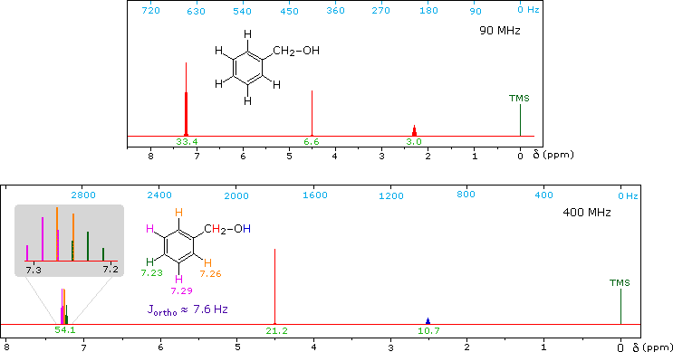
Anisole, an isomer of benzyl alcohol, has a more dispersed set of aromatic signals, thanks to the electron donating influence of the methoxy substituent. Spectra of anisole will be displayed by clicking on the benzyl alcohol diagram. The 90 MHz spectrum of anisole shows this greater dispersion, but the spin coupling of adjacent hydrogens still results in signal overlap. The 400 Mz spectrum at the bottom illustrates the greater dispersion of the chemical shifts, and since the coupling constants remain unchanged, the splitting patterns no longer overlap. In all these examples a very small meta-hydrogen coupling has been ignored.
Not all simple compounds have simple proton nmr spectra. The following example not only illustrates this point, but also demonstrates how a careful structural analysis can rationalize an initially complex spectrum. The 100 MHz 1H nmr spectrum of a C3H5ClO compound is initially displayed. This spectrum is obviously complex and not easily interpreted, except for concluding that no olefinic C-H protons are present. By clicking the "500 MHz Spectrum" button beneath the spectrum, a higher field spectrum will appear. Here it is clear that each of the five hydrogen atoms in the molecule is structurally unique, and is producing a separate signal. Also, it is clear there is considerable spin coupling of all the hydrogens. To see the coupling patterns more clearly it is necessary to expand and enhance the spectrum in these regions. For purposes of our demonstration, this can be done by clicking on any one of the signal multiplets. Clicking in an open area should return the original 500 MHz display. In some of the expanded displays two adjacent groups of signals are shown. Once an enlarged pattern is displayed, the line separations in Hz can be measured (remember that for a 500 MHz spectrum 1 ppm is 500 Hz). The middle signal at 3.2 ppm is the most complex, and overlap of some multiplet lines has occurred. The structure and signal assignments for this compound will be disclosed by clicking the " Show Solution " button.
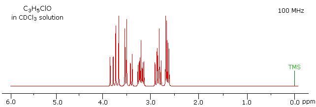
Broad band decoupling of the hydrogen atoms in a molecule was an essential operation for obtaining simple (single line) carbon nmr spectra. The chemical shifts of the carbon signals provide useful information, but it would also be very helpful to know how many hydrogen atoms are bonded to each carbon. Aside from the fact that carbons having no bonded hydrogens generally give weak resonance signals, this information is not present in a completely decoupled spectrum.Clever methods of retaining the hydrogen information while still enjoying the benefits of proton decoupling have been devised. The techniques involved are beyond the scope of this discussion, but the overall results can still be appreciated. The 13C nmr spectrum of camphor shown below will serve as an illustration. It will be helpful to view an expanded section of this spectrum from δ 0.0 to 50.0 ppm, and this will be presented by clicking the "High Field Expansion" button. The two lowest field signals are missing in the expanded display.
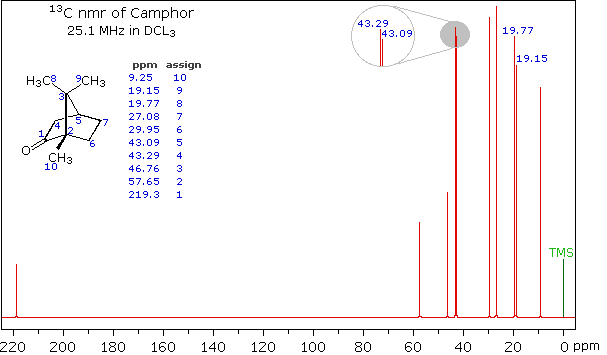
Even though the expanded display now shows the distinct carbon signals clearly, the origin of each is ambiguous. An early method of regaining coupling information was by off-resonance decoupling. In this approach a weaker and more focused proton decoupling frequency is applied as the carbon spectrum is acquired. Vestiges of the C-H coupling remain in the carbon signals, but the apparent coupling constants are greatly reduced. By clicking the "Off-Resonance Decouple" button the results of such an experiment will be displayed. Notice that all the methyl groups are quartets (three coupled hydrogens), the methylene groups are triplets and methine carbons are doublets. Overlap of two quartets near δ 19 ppm and the doublet and triplet near δ 43 ppm are complicating factors. A better way for classifying the carbon signals is by a technique called INEPT (insensitive nuclear enhancement by polarization transfer). This method takes advantage of the influence of hydrogen on 13C relaxation times, and can be applied in several modes. One of the most common applications of INEPT separates the signals of methyl and methine carbons from those of methylene carbons by their sign. Carbons having no hydrogen substituents have a zero signal. An INEPT spectrum of camphor will be displayed by clicking the "INEPT Spectrum" button.